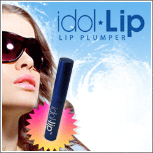

Red Lip Makeup

Red lip makeup is most likely one of those cosmetics things that make certain to establish a connection. One of the most well-known instances of ladies wearing red lipstick certainly is likely Marilyn Monroe with her light hair, notorious excellence mark, and obviously, those brilliant red lips While you may feel a little risky about your capacity to shake this intense shading, don’t stress, there must be an ideal shade of red out there for you. What’s more, these tips may very well assist you with discovering it!
An individual’s composition is a significant piece of their appearance, which is the reason deciding if you have a warm or cool skin tone is the initial step to finding that ideal shade. Those with brilliant connotations in their skin are considered to have a warm skin tone. What’s more, it’s complemented by gold adornments. Individuals with cool skin tone, as a rule, have a pink undercurrent underneath their skin. Rather than gold, cool skin tone will in general look better with silver adornments. 
A slick stunt Kelsium of Persephone Magazine suggests seeing if you have a warm or cool skin tone is genuinely basic and simple to do: all you need a bit of white paper and a mirror. In the first place, remain before the mirror with the white paper underneath your face in characteristic light. Close your eyes for a couple of moments and revive them. Is the primary thing that you see the white paper? Assuming this is the case, at that point, you have a warm skin tone. In the event that it’s the other way around, that implies you have a cool skin tone. Furthermore, after you know whether you have warm or cool-conditioned skin, you can discover numerous other corrective things that praise your skin tone simpler like establishments, eye shadows, and becomes flushed.
Lipsticks with earthy colored and burgundy suggestions will in general compliment individuals with warm tones more than cool tones. Then again, blue-based and coral lipsticks will likely commendation cool-conditioned skin.

Another approach to pick lipstick is to decide if you have reasonable, medium, or dull hued skin. Ladies with a light complexion like Dita Von Teese will look extraordinary with lipsticks that convey a blue connotation. As such, they can shake the brilliant red lipstick well overall. Medium skin should investigate earthy colored and earthier tones, yet can even dunk their feet into some blue-based lipstick. They have a marginally greater range regarding red lip makeup, and for those who are having brown complexion, you can attempt purples and burgundies as the best option.
Yet, as I’ve continually referenced, these are just tips and not rules. You should wear what’s best for you. In the event that the business partner, your companions, your aunties, your cousins, even your mom, reveals to you the lipstick looks incredible on you yet you think it looks frightful, at that point, it’s unquestionably not worth keeping.
Red lipsticks will in general have an emotional flare and catch a great deal of consideration. However, simply be cautious that you’re not unintentionally catching an inappropriate sort of consideration since you had a little normal red lips mishap: splendid red lipstick stains on your, in any case, impeccable teeth. One of the preventives is to apply a layer of lipstick, smudge it on a tissue, and afterward reapply another coat.
Likewise, utilize a lip liner to shield your red lipstick from seeping outside the lines of your mouth. With respect to the shade of the lip liner, stick near-naked, a similar shade, or probably a shade darker than your lipstick in the event that you can’t discover it (recollect that you’re not during the 90s any longer so you wouldn’t need dull lip liner rimming your lips).
Furthermore, reliable with the Fall Makeup Trends 2011, red lip makeup with a curve is it cosmetics pattern this season. So don’t hesitate to investigate and have a go at something you’ve never attempted! Or on the other hand on the off chance that you as of now have that ideal shading, add a touch of something to it for a change.